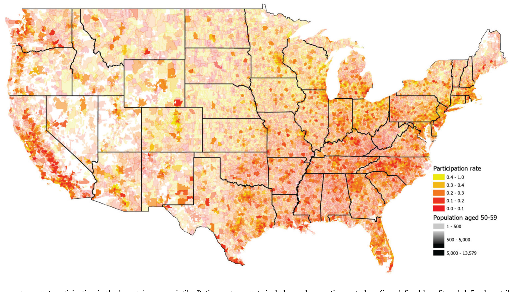
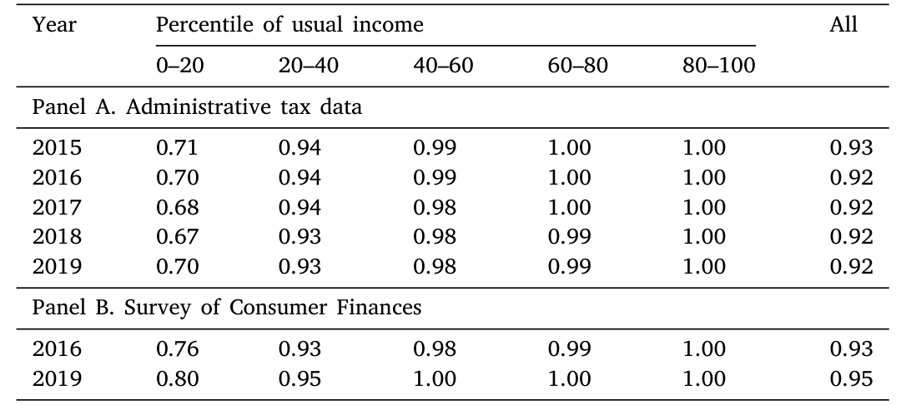
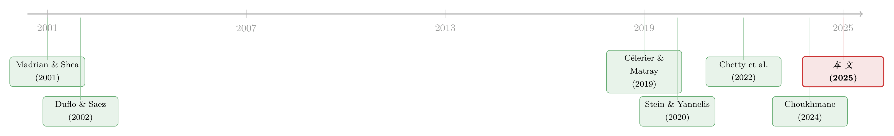

同样穷，为什么有人攒下了养老金？——一张全美报税记录里的「普惠金融」地图
本文读的是 Yogo, Whitten & Cox (2025, Journal of Financial Economics)：他们用美国国税局（IRS）全口径的报税记录，盯住 50–59 岁这一「攒养老金的黄金十年」，发现低收入家庭里约 21% 才有养老账户。但真正的问题不是「穷得攒不下」——在收入相同的条件下，你住在哪个邮区、有没有一份带退休计划的工作，几乎决定了你会不会参与。他们进一步估计：若全美强制「普及接入 + 自动加入」，最穷的那 20% 家庭的养老账户参与率能在十年里抬高 19 个百分点。
1 引言：一个被问反了的问题
谈到「普惠金融（financial inclusion）」，我们脑子里浮现的画面，多半是发展中国家某个没有银行网点的村庄，或者刚毕业、还没攒下第一笔存款的年轻人。换句话说，长期以来，普惠金融被默认成一个「穷地方的银行账户问题」。
但 Yogo、Whitten 和 Cox 这篇文章，想把这个问题彻底掉个个儿。
他们关心的不是村庄，是全美国；不是银行账户，更是养老账户（retirement account）；不是年轻人，而是 50 到 59 岁的中老年人——人生中离退休最近、最该为养老攒钱的那十年。在这个被忽视的角落里，他们看到一个刺眼的数字：在最低收入五分位（the lowest income quintile）的家庭里，2019 年只有 21% 拥有养老账户，而能接入（access）一份雇主退休计划的，也不过 38%。
这里的「养老账户」定义得很宽：既包括雇主退休计划里的固定收益（defined benefit）与固定缴费（defined contribution）计划，也包括个人退休安排（IRA）。即便口径这么宽，最穷的五分之一家庭里仍有近八成、什么养老账户都没有。
低参与，听上去顺理成章——穷嘛，哪有闲钱攒养老金？
可作者偏要追问一句：那为什么还有 21% 的低收入家庭攒下来了？
这一问，问出了全文的张力。如果参与与否只是「有没有余钱」的问题，那么在收入水平被卡死之后，参与率就该是一条平直的线，不会再有什么花样。可现实是，在收入完全相同的低收入家庭之间，参与率仍然天差地别。这就说明，「钱不够」根本不是故事的全部。真正在背后撑着这条裂缝的，是另外两样东西——地理，和接入。
2 数据：当样本就是「全体国民」
要把「同样穷的人为什么不一样」这件事讲清楚，你需要一个家庭层面的、覆盖面足够大的、还带时间维度的数据。传统的家庭调查——哪怕是金字招牌的消费者金融调查 (Survey of Consumer Finances, SCF)——样本太小、面板太短、还可能有测量误差，根本切不到「同一收入水平、不同邮区」这么细的颗粒度。
于是作者搬出了重武器：美国国税局的行政税务数据。
这是什么概念？他们抽取 2015–2019 年间所有年龄在 50–59 岁、且在美国境内有报税记录或信息申报表的个人，每年超过 4300 万人——和人口普查里这一年龄段的常住人口几乎一模一样。这不是「样本」，这近乎「全体」。在这之上，作者顺着每个人往前回溯九年的税表，把配偶、跨雇主的工作经历都接了起来。
参与与否，则被翻译成一张张具体的税表： - 养老账户参与：W-2 表第 13 框（retirement plan）是否打钩、是否存在 5498 表（IRA 缴费信息）、1099-R 表上的养老金分配； - 雇主计划接入：只要雇主开给你的 W-2 第 13 框打了钩，且该雇主付给你的收入超过「联邦最低工资 × 1000 小时」，就算你有资格接入； - 银行账户参与：1040 表上用于缴退税的电子资金划转（约八成退税通过直接存款到账），辅以 1099-INT 表上的利息。
Larrimore et al. (2021) 的方法被用来构造税前家庭收入，再做五年滑动平均，得到一个能熨平短期波动的「常住收入（usual income）」，并据此把全国家庭切成五个收入五分位。然后，每个家庭被映射到约 32,000 个邮区制表区 (ZIP Code Tabulation Areas, ZCTA) 之一——这是用调查数据想都不敢想的地理分辨率。
一个值得佩服的细节：作者把行政数据的总参与率拿去和 SCF 对表，发现两边对得严丝合缝——2019 年两套数据都显示 69% 的家庭有养老账户。这等于给「行政数据可信」做了一次外部校验。只有在最低收入五分位的银行账户上，税表口径会略微低估参与率，作者也老实交代了。
3 地理：穷，但「穷得不一样」
有了这张近乎普查的网，作者做了一件调查数据做不到的事——画地图。
他们把最低收入五分位家庭的养老账户参与率，按邮区一块块涂上颜色。地图一铺开，故事就跳了出来：同样是穷人，住在不同地方，参与率截然不同。这不是噪声，而是清晰、连片、有结构的地理变异。

Figure 1: Retirement account participation in the lowest income quintile. Retirement accounts include employer retirement plans (i.e., defined benefit
接着，一个自然的问题是：到底是邮区的什么特征，在解释这种地理分化？作者把四样东西放进回归——邮区平均收入、收入不平等、种族构成，以及 Chetty et al. (2022) 提出的经济连通性 (economic connectedness)（衡量不同社会经济群体之间的跨阶层友谊）。所有回归都控制了家庭自身收入和区域价格平价 (regional price parities)（即各地生活成本的差异）。
结果很干净： - 邮区平均收入越高，低收入家庭的养老账户参与率越高； - 邮区收入不平等越高，参与率越低； - 西班牙裔（Hispanic）和黑人（Black）人口占比越高，参与率越低； - 经济连通性越高，参与率越高——但它并不能挤掉平均收入和不平等的解释力。
这最后一点尤其耐人寻味。它说明，「平均收入」和「不平等」这两个邻里指标里，装着比单纯的同伴效应（peer effects）更丰富的信息。换句话说，一个低收入家庭，会因为住在一个更富、更平等的社区而受益——哪怕它自己的收入一分钱没多。
那银行账户呢？故事却反转了。在最低收入五分位里，能可靠预测银行账户参与的唯一邮区特征，是收入不平等（负相关）。平均收入、经济连通性，统统失灵；作者也没有发现银行参与和少数族裔占比之间的负相关。倒是银行网点的存在，对银行账户参与有一个小而正的影响——这恰好与 Dlugosz et al. (2021)、Sakong & Zentefis (2022) 那条「供给侧也重要」的线索接上了头。
养老账户和银行账户，在地理上的「画像」竟如此不同，这本身就是一个值得玩味的发现（关于支付与普惠的供给侧故事，可参见《一辆共享单车，如何让 1 亿人「被看见」？》）。
4 识别：把「接入」从「攒钱意愿」里剥出来
到这里，相关性已经讲得很漂亮了。但真正关键的一步在于——因果。
地理相关再强，也可能只是「爱攒钱的人扎堆住在好社区」。作者真正想敲定的是那根撬动一切的杠杆：接入一份雇主退休计划，到底能把参与率抬高多少？
这件事难就难在内生性。你不能简单比较「有雇主计划」和「没有」的人——前者很可能本来就更稳定、更会规划。更棘手的是，工人会为了拿到退休计划而主动跳槽，这又把「接入」和「个人特质」搅在了一起。
作者的解法，是充分利用面板维度，搭了一个巧妙的「意图处理（intent-to-treat）」工具变量：
识别设定：从 2010 年还没有雇主退休计划接入的家庭出发。识别假设是——一个雇主在 2010 年之后是否、以及何时开始提供退休计划，在控制了该雇主 2010 年的特征之后，对工人而言是一次意料之外的处理（unexpected treatment）。为了对付「为接入而跳槽」的内生性，作者构造的工具变量是：假如这名工人从 2010 到 2019 年一直待在原来那家雇主，他本会拥有的「反事实接入」。
这个设计的妙处在于：它不去预测工人会不会跳槽（那是内生的），而是冻结住「原雇主」，只看原雇主自己是否新开了退休计划。这就把「政策/制度供给的变化」从「个人择业行为」里干净地剥离了出来。比起以往只盯着一两家、或一小撮雇主的研究，这套设计覆盖了海量的雇主与工人，外部效度高得多。
剥离之后，数字相当震撼： - 在外延边际（extensive margin）上，接入一份雇主退休计划，使最低收入五分位的养老账户参与率提高 32 个百分点； - 在此之上，自动加入（automatic enrollment）又额外贡献 28 个百分点； - 在内涵边际（intensive margin）上，在没有自动加入的情况下，每多接入一年（首年之后），参与率再涨约 1 个百分点。
把这三个数字摆在一起，结论几乎是不言自明的：对低收入家庭来说，「能不能接入」「会不会被自动卷进去」，远比「有没有攒钱的觉悟」重要得多。这也正面回应了引言里那个被问反的问题——21% 的人之所以攒下来了，很大程度上不是因为他们更自律，而是因为他们碰巧有一份带计划的工作。
5 反事实：如果全美都「自动加入」
既然接入和自动加入的杠杆这么长，一个顺理成章的政策念头就冒出来了：那干脆全国普及，行不行？
现实里，这件事已经在路上。从 2017 年的俄勒冈州开始，如今已有十个州立法要求——若雇主自己不提供退休计划，就必须把所有员工自动纳入一个州办的退休储蓄项目。只是这些强制令太新，还看不到长期效果。
于是作者做了一次反事实推演：假如从 2010 年起，全美就已经实行「普及接入 + 自动加入」，2019 年的养老账户参与率会是什么样？
答案是：最低收入五分位的参与率会提高 19 个百分点，第二个五分位提高 16 个百分点。
这并不是说「轻推（nudge）」万能。作者很克制地引了近些年那批更审慎的证据：没有自动加入的工人，三年后会靠更高的缴费率「追上来」（Choukhmane, 2024）；很多人会在换工作时把养老金套现取走（Wang et al., 2022）；在单一雇主层面奏效的轻推，放到全国尺度未必同样灵（DellaVigna & Linos, 2022）。正因如此，作者强调的是外延边际——先让人「有账户」，而不是去解决「攒多少」这个更纠缠的内涵边际难题。
这里还埋着一个对政策工具的判断。美国政府其实早就用税收优惠鼓励攒养老金，比如面向工人的「储蓄者抵免（Saver's Credit）」，最高能抵退休缴费的 50%——对有足够纳税义务的家庭，这几乎等同于联邦政府按 100% 给你配缴（夫妻合并申报上限 2000 美元）。可 Ramnath (2013) 发现，Saver's Credit 对实际缴费的因果效应很有限。两相对照，作者给出一个颇有分量的政策含义：给雇主「办计划」的激励，可能比给工人「去攒钱」的激励更有效。
6 为什么这件事关乎「财富不平等」
绕了一大圈，作者最后把这条线接回了一个更大的命题：财富不平等。
在美国，财富不平等远比收入不平等严重。据 2019 年 SCF，底层一半家庭拿到 15% 的收入，却只握着 2% 的财富；顶端 1% 拿走 19% 的收入，却占有 33% 的财富。哪怕把最顶端的 1% 剔除掉，底层一半家庭也只是「挣着 19% 的收入、却只拥有 3% 的财富」。
而养老账户和银行账户，恰恰是普通家庭积累金融财富最主要的两条通道。底层家庭迟迟不参与，意味着他们既错过了税收优惠（对够格家庭，Saver's Credit 像一笔 100% 的配缴），也错过了让有行为偏差的人「养成储蓄习惯」的自动机制（Mullainathan & Shafir, 2009；Beshears et al., 2022），更被挡在了风险资产之外——没有养老、银行或券商账户的家庭，干脆一份有风险的金融资产都不持有，而在平滑偏好、无固定成本的组合理论看来，他们本该持有一些股票敞口。研究底层家庭的低参与，就是从根上研究财富不平等是怎么一代代固化下来的。

Table 2: reports bank account participation for households with a
7 文献脉络
把这篇文章放回它所在的那条河流里，脉络其实相当清晰。
最上游，是养老储蓄里的「惯性与默认选项」传统。Madrian & Shea (2001) 那篇经典，第一次让人看清自动加入对 401(k) 参与的巨大拉动力——「默认」的力量。紧接着，Duflo & Saez (2002, 2003) 把同伴效应与信息写进了退休计划决策：你同事怎么选，会影响你怎么选。

中游，是对「轻推」的再审视。当自动加入从单一雇主走向全国，研究者开始追问它的长期、大规模效果到底几何——Choukhmane (2024) 的「追赶效应」、Wang et al. (2022) 的「中途套现」、DellaVigna & Linos (2022) 的「规模放大未必奏效」，都是对早期乐观的必要修正。与此并行的，是普惠金融的供给侧与财富积累这条线：Célerier & Matray (2019) 用银行网点供给打通了「普惠—财富」的链条，Stein & Yannelis (2020) 则从历史上的弗里德曼储蓄银行里读出了金融参与对人力资本与财富的长远意义。
而把整条河托住的，是 Chetty et al. (2022) 用社交数据测出的经济连通性，以及 Bricker et al. (2020) 对财富与收入集中度的刻画。
这篇文章的位置，正在这几股水流的交汇处：它第一次用近乎全体国民的行政税务数据，把「养老参与」这个原本属于劳动经济学/公共财政的话题，拽进了家庭金融与普惠金融的视野，并且在「同收入、不同地理」这个前人切不动的颗粒度上，把地理与接入两条机制同时钉了下来。
8 评论与延伸（Q&A + 研究方向）
(a) 几个可能的疑问
Q：这和发展中国家讲的「普惠金融」是一回事吗？
不完全是。传统普惠金融关心的是「有没有银行账户、能不能借到钱」，对象常是穷国或年轻人。本文把镜头对准发达经济体里 50–59 岁、临近退休的低收入家庭的养老账户——同样是「被金融体系排除在外」，但维度和后果（财富积累、退休保障）都不同。
Q：21% 这个低参与率，会不会只是「穷人真的没钱攒」？
这正是作者要反驳的。如果只是没钱，那在收入卡死之后参与率就不该再有结构性差异。可数据显示，同一收入水平的低收入家庭，参与率随邮区平均收入、不平等、是否接入雇主计划而剧烈变化。所以「没钱」解释不了全部，「接入」和「地理」才是关键变量。
Q：那个「意图处理」工具变量，到底干净在哪？
它绕开了「工人为接入而跳槽」这个内生选择。工具变量不看工人实际去了哪，而是冻结原雇主、只看原雇主自己 2010 年后是否新开了退休计划。这一变化更接近制度/供给侧的外生冲击，从而把「接入」与「个人攒钱意愿」分了开。当然，它依赖「原雇主开计划的时机，在控制 2010 年雇主特征后是意料之外的」这一假设。
Q：自动加入的 28 个百分点，是不是被高估了？
要小心解读。它衡量的是外延边际（有没有账户），而不是最终攒了多少。近年文献提醒：没有自动加入的人会用更高缴费率追赶（
Choukhmane, 2024），也有人中途套现（Wang et al., 2022）。所以「参与率涨 28pp」不等于「财富净增 28pp 的量级」，长期净效果要打折扣。
Q：种族差异，是不是因为少数族裔聚居区根本接触不到雇主计划？
作者明确检验并否定了这个假说：高少数族裔占比邮区的养老参与率更低，并不是因为那里接入雇主计划的机会更差。这让「地理/邻里」效应更像是同伴、信息、信任一类的渠道，而非单纯的供给缺口。
Q：为什么银行账户的地理画像和养老账户如此不同？
银行账户里，唯一可靠的邮区预测变量是收入不平等，平均收入和经济连通性都失灵，且与少数族裔占比无负相关；倒是银行网点存在有小幅正效应。这暗示银行参与更受「供给可得性」驱动，而养老参与更受「制度接入 + 邻里信息」驱动——两条普惠的逻辑，不能混为一谈。
(b) 几个可能的研究问题与提案
1. 把「接入冲击」接到信用市场上
【经济故事】一旦低收入家庭被自动卷入养老/银行体系，他们的现金流可见性、储蓄缓冲都会变化，这可能反过来改变他们的信贷可得性与违约率——普惠的「外溢」。 【可行性】中。行政税务数据若能与征信数据匹配则极强，但 IRS 数据的可及性是硬约束；退而求其次，可用州级 auto-IRA 强制令的错位实施（
Bloomfield et al., 2024）做双重差分，识别尚可。
2. 经济连通性到底通过什么渠道起作用？
【经济故事】本文证明经济连通性正向预测参与、且不能被平均收入挤掉，说明里面有同伴效应之外的东西。是信息？信任？还是榜样？把渠道拆开很有价值。 【可行性】中偏低。需要更细的社交/职场网络数据（如
Chetty et al., 2022的底层数据），ZCTA 层面的连通性又不全，识别因果（而非同质性分选）很难。
3. 外资与机构持有人，会不会影响「谁能接入养老计划」？
【经济故事】雇主开不开退休计划、配缴多慷慨，可能与其融资结构、所有权（如 PE/外资持股）相关——所有权变更或许是一个外生的「接入冲击」来源。 【可行性】中。把雇主层面的所有权数据（PE 收购、外资持股）与 Form 5500 退休计划数据匹配，用收购事件做事件研究，数据可得、识别清晰，是一个相对 doable 的方向（可与《PE 买下医院之后》那类设计呼应）。
4. 「养老参与差距」对长期财富与流动性需求的传导
【经济故事】底层家庭长期不持有任何风险资产，这不仅是财富问题，也可能塑造了他们对流动性、安全资产的需求结构。把参与差距接到资产需求上，能连起家庭金融与资产定价。 【可行性】低。需要长期面板上的资产持有与组合数据，行政税表只看外延边际、看不到余额与组合，识别长期财富效应非常吃力。
9 我的判断
这篇文章最大的贡献，在我看来不是某个具体系数，而是它把数据的颗粒度推到了极致——用近乎全体国民的报税记录，第一次让我们能在「同收入、不同邮区」这个层面看清财务参与的裂缝，并干净地分离出「地理」与「接入」两条机制。32 个百分点的接入效应、19 个百分点的反事实，都是有政策分量的数字；而「给雇主办计划的激励可能强于给工人攒钱的激励」这个判断，对当下十个州正在推进的 auto-IRA 实验，是直接的、可检验的指引。
要说对识别的担忧，核心仍在那个工具变量的外生性假设上：「原雇主在 2010 年之后新开退休计划，是意料之外的」——但雇主开计划，往往伴随企业自身经营、规模、劳动力市场竞争的变化，这些变化也可能独立地影响员工的攒钱行为。作者用 2010 年雇主特征做了控制，但「为什么偏偏这家公司、偏偏这一年开了计划」背后的故事，仍值得更多稳健性检验去夯实。此外，全篇聚焦外延边际，对「自动加入会不会只是把储蓄从别处搬过来」这个内涵边际上的老问题，本文坦诚地选择了不去回答。
后续我最想看到的，是把这套「接入冲击」接到真实的财富积累与信用结果上——十年后，那些被自动卷进养老体系的低收入家庭，净财富、负债、违约，到底走向了哪里。毕竟，普惠金融的终点不是「开了一个账户」，而是「日子真的过得更稳了」。
参考文献
- Beshears, J., Choi, J. J., Laibson, D., Madrian, B. C., Skimmyhorn, W. L. (2022). Borrowing to save? The impact of automatic enrollment on debt. Journal of Finance 77(1), 403–447.
- Bloomfield, A., Goodman, L., Rao, M., Slavov, S. (2024). Why do employers establish retirement savings plans? Evidence from state "auto-IRA" policies. NBER Working Paper 32817.
- Bricker, J., Goodman, S., Moore, K. B., Volz, A. H. (2020). Wealth and income concentration in the SCF: 1989–2019. FEDS Notes.
- Célerier, C., Matray, A. (2019). Bank-branch supply, financial inclusion, and wealth accumulation. Review of Financial Studies 32(12), 4767–4809.
- Chalmers, J., Mitchell, O. S., Reuter, J., Zhong, M. (2021). Auto-enrollment retirement plans for the people: Choices and outcomes in OregonSaves. NBER Working Paper 28469.
- Chetty, R., et al. (2022). Social capital I: Measurement and associations with economic mobility. Nature 608(7921), 108–121.
- Choukhmane, T. (2024). Default options and retirement saving dynamics. Working paper, MIT.
- DellaVigna, S., Linos, E. (2022). RCTs to scale: Comprehensive evidence from two nudge units. Econometrica 90(1), 82–116.
- Dlugosz, J., Melzer, B., Morgan, D. P. (2021). Who pays the price? Overdraft fee ceilings and the unbanked. Working paper, Board of Governors of the Federal Reserve System.
- Duflo, E., Saez, E. (2002). Participation and investment decisions in a retirement plan: The influence of colleagues' choices. Journal of Public Economics 85(1), 121–148.
- Duflo, E., Saez, E. (2003). The role of information and social interactions in retirement plan decisions: Evidence from a randomized experiment. Quarterly Journal of Economics 118(3), 815–842.
- Larrimore, J., Mortenson, J., Splinter, D. (2021). Household incomes in tax data using addresses to move from tax-unit to household income distributions. Journal of Human Resources 56(2), 600–631.
- Madrian, B. C., Shea, D. F. (2001). The power of suggestion: Inertia in 401(k) participation and savings behavior. Quarterly Journal of Economics 116(4), 1149–1187.
- Mullainathan, S., Shafir, E. (2009). Savings policy and decisionmaking in low-income households. In Insufficient Funds, Russell Sage Foundation, 121–146.
- Ramnath, S. (2013). Taxpayers' responses to tax-based incentives for retirement savings: Evidence from the Saver's Credit notch. Journal of Public Economics 101, 77–93.
- Sakong, J., Zentefis, A. K. (2022). Bank access across America. Working paper, Federal Reserve Bank of Chicago.
- Stein, L. C. D., Yannelis, C. (2020). Financial inclusion, human capital, and wealth accumulation: Evidence from the Freedman's Savings Bank. Review of Financial Studies 33(11), 5333–5377.
- Wang, Y., Zhai, M., Lynch, J. G. (2022). Cashing out retirement savings at job separation. Working paper, University of British Columbia.
- Yogo, M., Whitten, A., Cox, N. (2025). Financial inclusion across the United States. Journal of Financial Economics 166, 104003.